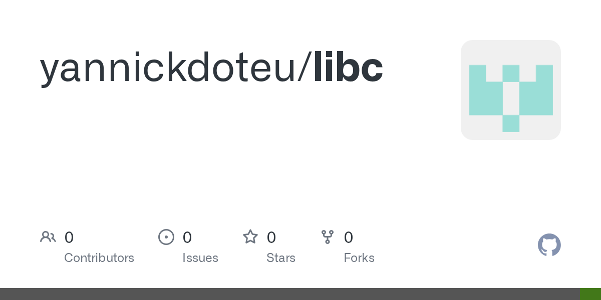

Libft: My first computer library

The first project of my school (Campus 19, one of the 42 network schools) was to rewrite parts of the standard C library. You can find it here:
 yannickdoteu
yannickdoteu
In the rest of this article, I'll explain what it is about and why I did it.
What is a computer library?
Writing code is all about giving instructions to a computer. Computers are complex machines that need very (very) specific instructions. Something that might seems simple, like loading a website, actually consists of many small and specific instructions.
Writing these many small instructions yourself takes a lot of time and energy. Luckily, you are not alone and for a lot of things you will give the same kind of instructions to the computer. (For example, copying data from one place to the other is something you will often do.)
This is why others before you already wrote the code for many of these instructions and bundled them together in what you call a computer "library", so you can use it for the things you want to do more easily!
What is the standard C library?
C is a computer language that has been around for a long time already. It is still popular, mainly if you want to write efficient programs or if you want to learn the fundamental concepts about computer programming.
Just like with many other languages, C comes with pre-written pieces of code ("a library") to make it easier for you to write programs with it. It is called "libC". Rewriting parts of this library is a good exercise to learn fundamental concepts of programming, because you will understand how the many small and specific instructions almost all computer programs rely on work.
Curious on what my take on the standard C library is? Just have a look :-)